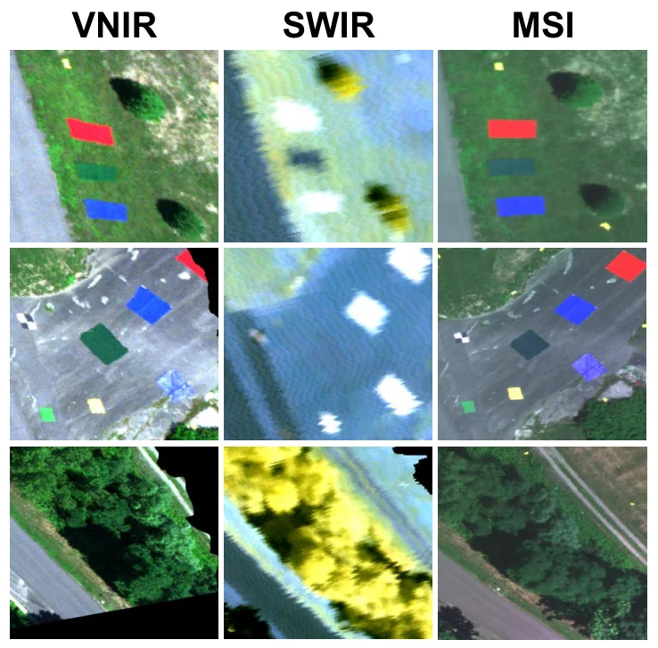
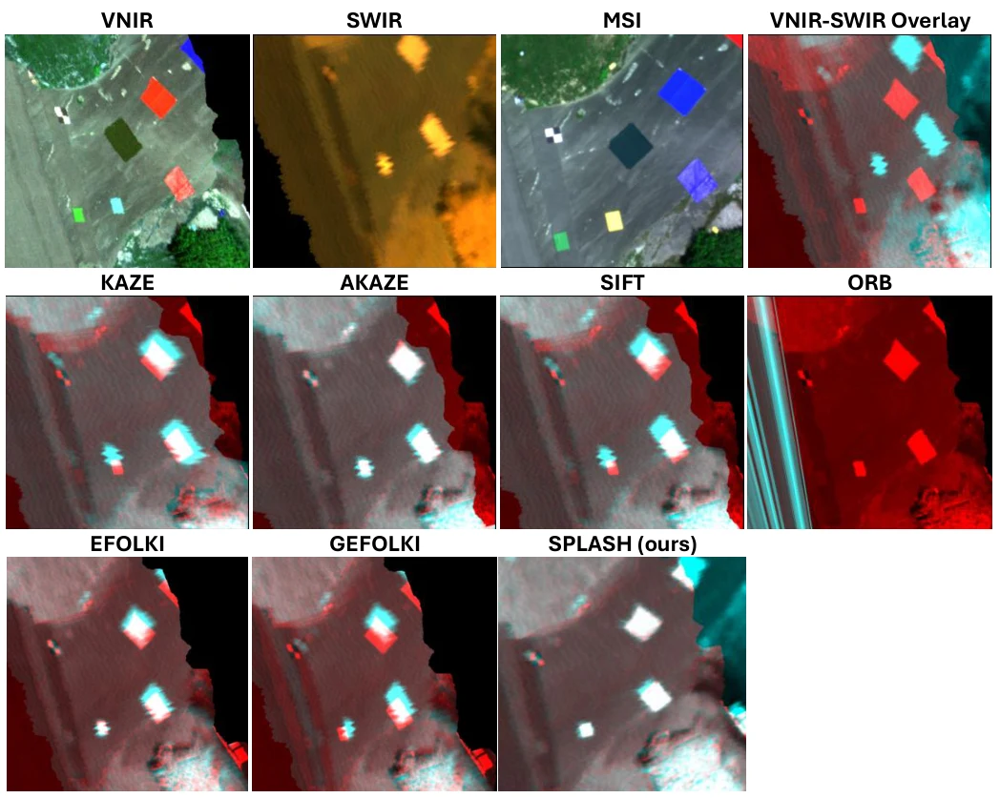
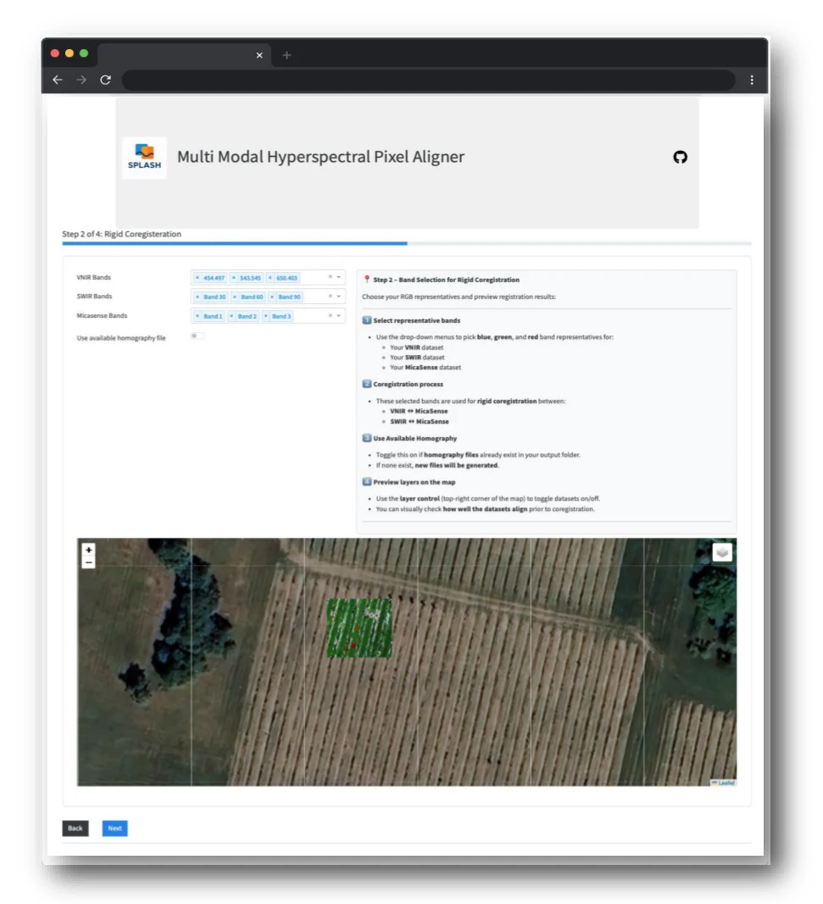

Computer vision
SPLASH: Multimodal Drone Hyperspectral Fusion

Overview
SPLASH (Spatial Elastic Harmonization) is a computer-vision framework for aligning visible–near-infrared (VNIR) and shortwave-infrared (SWIR) hyperspectral imagery collected by pushbroom sensors on separate drones. Using framing-array multispectral imagery as a spatial reference, it combines three stages: rigid coregistration to correct global offsets, ShapeShifter correction to reduce row-wise distortions caused by platform roll, and elastic registration to refine remaining local misalignment between hyperspectral cubes. This workflow improves spatial correspondence across sensors, supporting spectral fusion and downstream analysis. Interactive graphical interfaces and desktop utilities guide users through data processing, alignment inspection, and visualization within laboratory workflows.
A closer look

The alignment challenge
VNIR, SWIR, and multispectral views show differences in spatial alignment and pushbroom artifacts.

Registration comparisons
Qualitative VNIR–SWIR overlays compare SPLASH with feature-based and optical-flow methods.

Interactive processing interface
A guided interface supports band selection, alignment inspection, and processing.